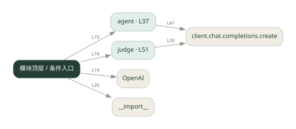

1-19 · 全课程第 19 节
单 Agent 评测
019.py
源码快照 3bd9ac091789 · 静态解析 · 2026-09-10
01 / 要完成的事
用固定问题集运行 Agent，再判定答案是否满足期望。
02 / 为什么要做
凭聊天感觉难以判断改动是否真的提升质量。
03 / 当前代码状态
存在外部服务或模型依赖；执行前需按源文件配置依赖和凭据，可能联网或产生 API 费用。 本次只做静态解析，没有运行练习，也没有替你填写或修改原代码。
04 / 调用图
打开大图 ↗实线：源码中的直接调用；虚线：函数引用/注册、动态调用或按方法名推断的候选。L 是调用所在源码行号。箭头不表示执行顺序或每次必经；分支、循环、异步调度及框架内部调用需结合源码。灰色是外部/未解析目标，橙色是动态分发；省略 print、len 和常规容器操作以减少干扰。孤立函数可能尚未接入。

先从 模块入口 出发，沿箭头找到本文件函数，再查看外部调用或动态分发。右侧调用清单保留所有静态调用点，能回到原文件逐行对照。
05 / 函数定位
| 函数 / 定义行 | 职责（源码注释） | 内部调用 |
|---|---|---|
agentL37 | 以源码函数体为准；下列调用展示其依赖。 | client.chat.completions.create, resp.choices[动态键].message.content.strip |
judgeL51 | 以源码函数体为准；下列调用展示其依赖。 | client.chat.completions.create |
这样做的优点
同一测试集可重复比较版本。
代价与局限
样本少会偏；模型裁判可能误判，要保留人工核对样本。
适用场景
提示词或模型改动后的回归比较。
不宜直接照搬
少量样例全部通过就声称对所有问题可靠。
动手检验理解
加入一个容易误判的同义表达，比较精确匹配和裁判结果。
有未实现位置时先预测，再补齐验证。能启动不等于逻辑正确。
查看全部 17 个静态调用 / 引用点
| 调用方 | 目标 | 源码行 | 类型 |
|---|---|---|---|
| <模块入口> | OpenAI | 19 | 调用 |
| <模块入口> | __import__ | 20 | 调用 |
| agent | client.chat.completions.create | 41 | 调用 |
| agent | resp.choices[动态键].message.content.strip | 48 | 调用 |
| judge | client.chat.completions.create | 55 | 调用 |
| <模块入口> | print | 68 | 调用 |
| <模块入口> | print | 69 | 调用 |
| <模块入口> | print | 70 | 调用 |
| <模块入口> | agent | 73 | 调用 |
| <模块入口> | judge | 74 | 调用 |
| <模块入口> | print | 78 | 调用 |
| <模块入口> | print | 79 | 调用 |
| <模块入口> | print | 80 | 调用 |
| <模块入口> | len | 82 | 调用 |
| <模块入口> | print | 83 | 调用 |
| <模块入口> | print | 84 | 调用 |
| <模块入口> | print | 85 | 调用 |